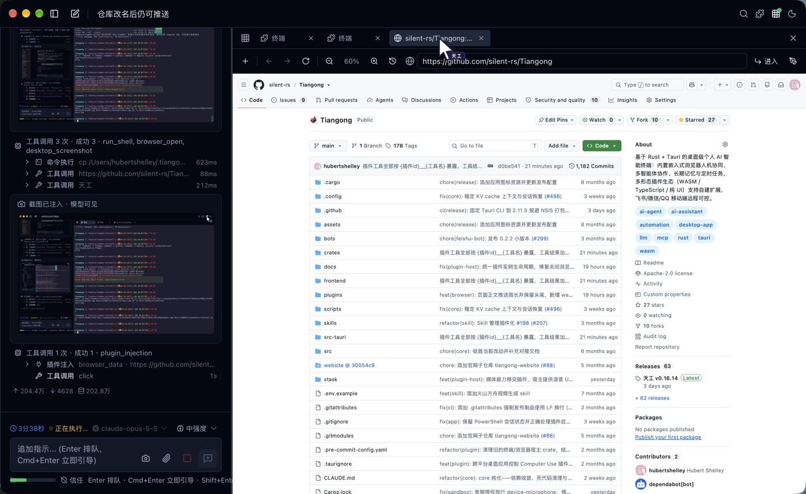
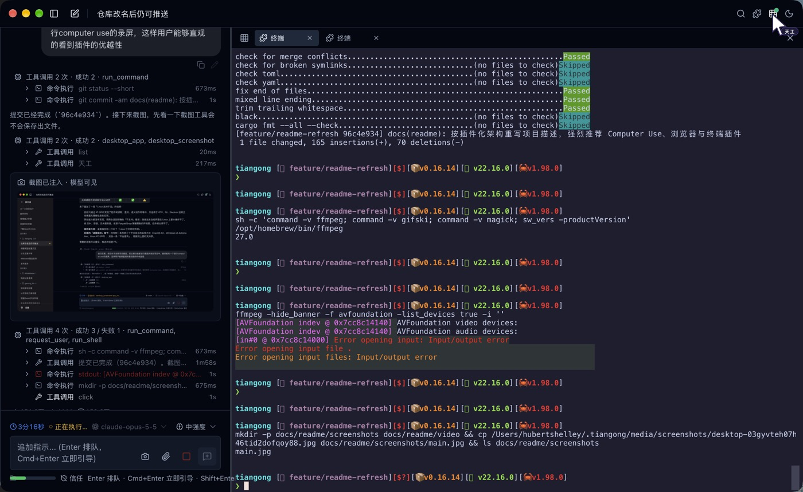
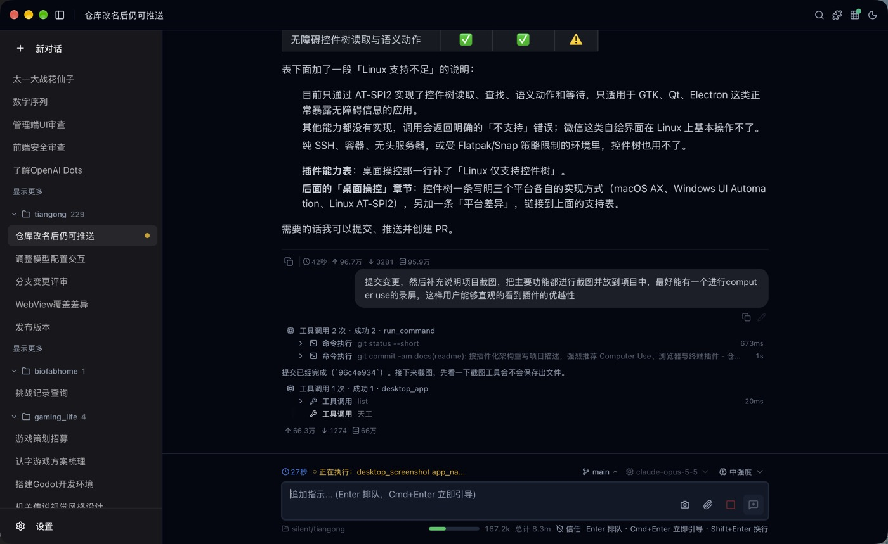
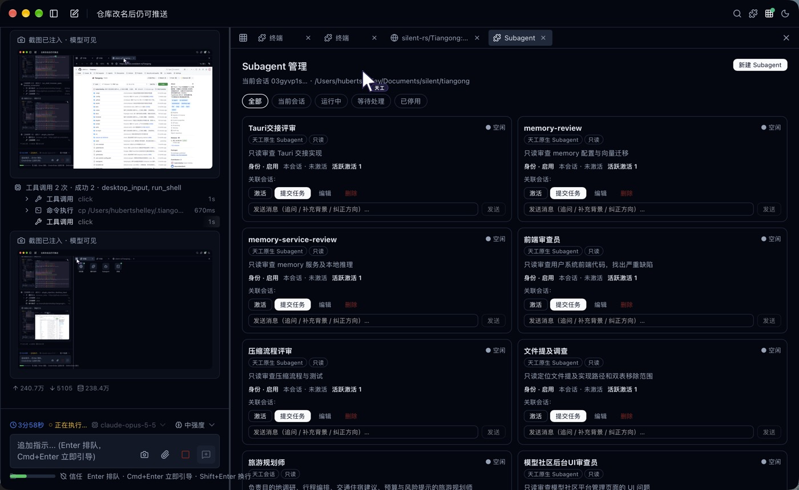
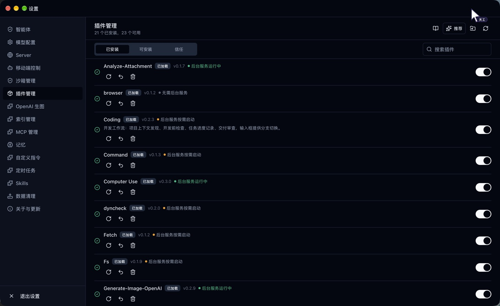
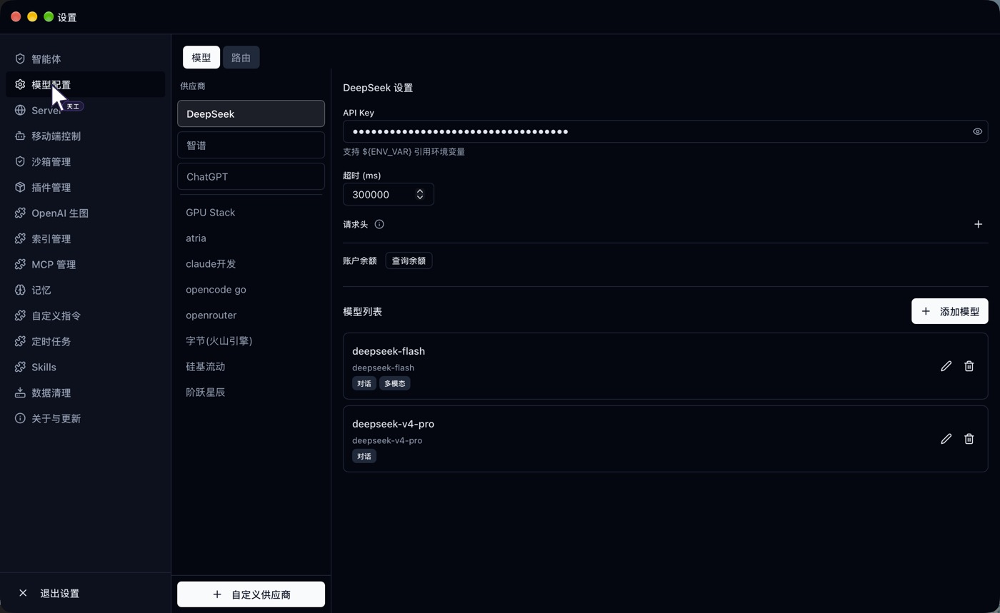

嵌入式浏览器 browser
- 打开网页、读取正文；超长页面保留头尾，按需分段读取或关键词搜索
- 查询 DOM、填写表单、点击元素，处理需要登录态的后台
- 你手动浏览、登录、点击时，Agent 感知页面变化并接着做
开源 · Rust + Tauri · Apache-2.0
天工是以插件为核心的个人 AI Agent。主程序只负责 Agent 循环、模型接入、插件运行时与沙箱； 操作桌面应用、浏览网页、执行命令、长期记忆、多智能体协作——全部由插件提供，按需安装。
首推插件computer-use
微信、飞书、系统设置、设计工具、自绘界面的客户端……Computer Use 让 Agent 像人一样操作它们： 唤起、观察、点击、输入，每一步都看得见，你随时可以接管。
按应用名唤起或启动应用（支持「微信」这类中文名），自动与天工窗口分屏；输入区「恢复窗口」一键还原。
截取窗口、区域或全屏，直接作为图片交给模型；坐标可直接换算为点击位置，不依赖控件是否暴露无障碍信息。
系统级键鼠合成：点击、拖拽、滚动、组合键，中文输入不经输入法；操作后可自动截图确认结果。
天工虚拟指针从系统鼠标位置分身出现、演示每一步，按键以 HUD 卡片显示。Agent 做了什么，一目了然。
原生控件可读取无障碍树，执行按下、聚焦、赋值、勾选等语义动作，比坐标点击更稳。
你可以这样说
平台支持
| 能力 | macOS | Windows | Linux |
|---|---|---|---|
| 唤起应用 · 自动分屏 | ● | ● | — |
| 截图注入模型上下文 | ● | ● | — |
| 键鼠输入 | ● | ● | — |
| 虚拟指针 · 按键 HUD | ● | ● | — |
| 无障碍控件树与语义动作 | ● | ● | ◐ |
Linux 支持不足：目前仅通过 AT-SPI2 支持控件树读取与语义动作，适用于 GTK、Qt、Electron 等暴露无障碍信息的应用； 唤起、截图、键鼠、分屏尚未实现，自绘界面应用基本无法操作。macOS 首次使用需授予「辅助功能」与「屏幕录制」权限。
推荐插件browser · terminal
它们就在天工的拓展区里。Agent 在做什么，你看得见；你接手了什么，Agent 也感知得到。

browser
terminal插件目录Official catalog
每个插件独立构建、签名和发布，在「设置 → 插件管理」中一键安装与启停。下面的列表来自官方插件目录。
没有想要的？自己做一个
Plugin Creator 提供 ui-app、ts-tool、ts-npx、node-sidecar、node-tool 五种模板，由 Agent 生成、构建、签名并安装。 插件可以同时向 Agent 声明工具、向你贡献界面。
界面Inside Tiangong




架构Host + Plugins
主程序保持精简、可治理；能力以插件独立演进。插件声明权限与能力，执行边界由宿主根据会话决定，插件无法自行扩大权限。
插件
插件运行时
注册 · 签名信任 · 工具命名{插件id}__{工具名} · UI 挂载点 · Sidecar 生命周期
Agent 循环 · 模型接入
ReAct · 上下文压缩 · DeepSeek V4 · ChatGPT（Codex OAuth）· Anthropic · OpenAI 兼容系统沙箱
Seatbelt · bubblewrap · AppContainer + Job Object，签名自检失败拒绝启动，不静默降级安装Get Tiangong
安装后在「设置 → 插件管理」中安装 Computer Use、浏览器与终端插件。
# 源码编译纯 CLI / Server 二进制
git clone https://github.com/silent-rs/Tiangong.git && cd Tiangong
cargo build --release
# 用 ChatGPT 账号登录，或配置 DeepSeek 等供应商
tiangong model chatgpt login --device
tiangong server -d